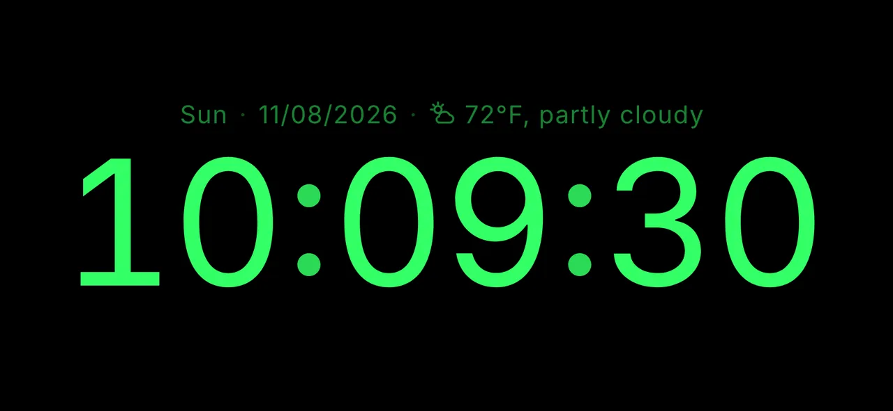
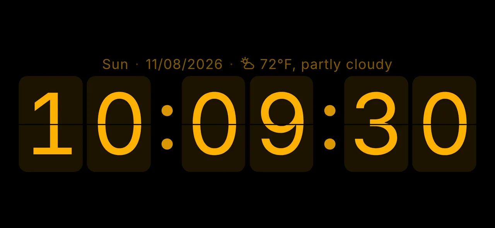
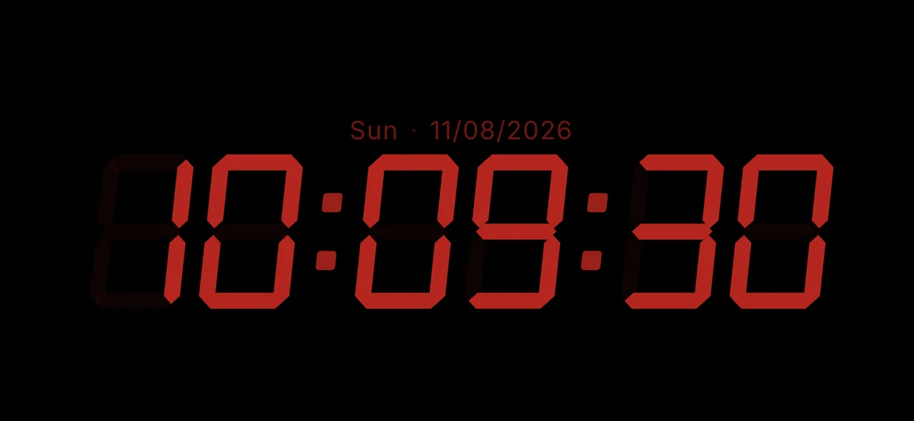
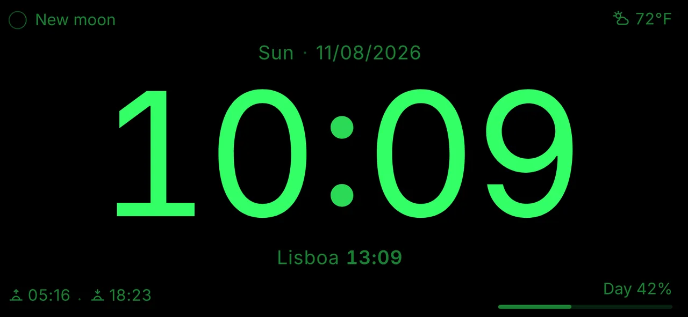
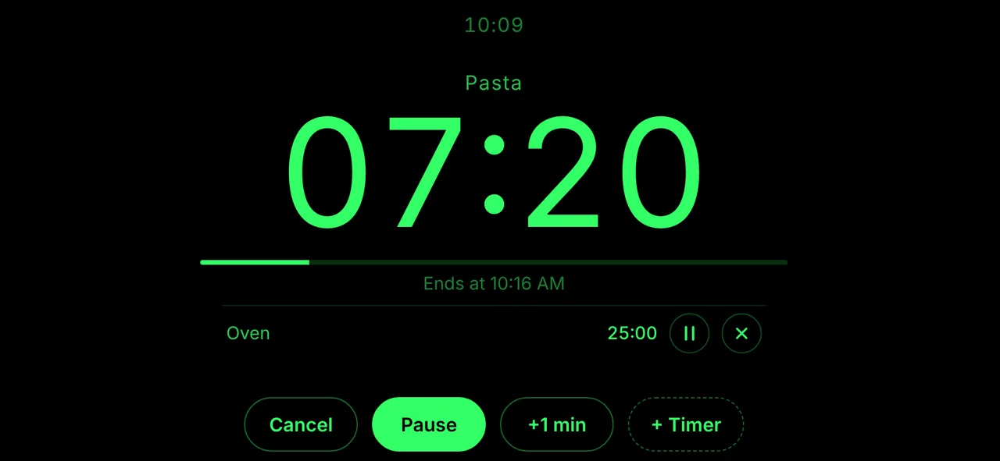
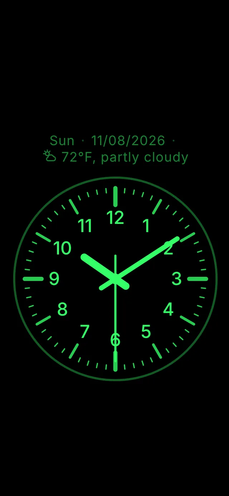
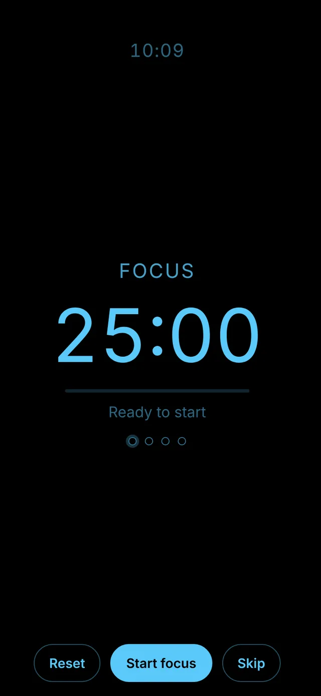

Your phone as a desk clock.
No ads.
NADA Clock (No Ads, Display Always) is a minimal desk clock for iPhone and Android. The screen stays on and nothing ever covers the time. Free, no sign-up, no app store.

Why it exists
The desk clock apps I found all had ads, and at some point the ad would show up right on top of the clock.
NADA Clock was made to be the opposite: just the time on screen. It's a personal, open-source project, built for my own use and shared with anyone who wants it.
How to install
No App Store or Play Store needed. You add the clock to your home screen from the browser and it opens like an app: full screen and working offline.
iPhone (Safari)
- Open ofeliper.github.io/nada-clock/ in Safari.
- Tap Share (the square with an up arrow).
- Choose Add to Home Screen and confirm.
- Open NADA Clock from its icon. The screen stays on while the clock is open (iOS 18.4 or later).
Android (Chrome)
- Open ofeliper.github.io/nada-clock/ in Chrome.
- Tap the ⋮ menu and choose Install app (or Add to Home screen).
- Open NADA Clock from its icon.
- Rotation locked? Tap the screen and use the rotate button in the top bar to see the clock in landscape.
- Battery: with the screen always on, it's best to keep your phone on the charger.
What it does
Digital or analog
Rounded font, 7-segment LED or flip cards. 12- or 24-hour format, optional seconds. One tap switches between digital and analog.
Screen always on
Swipe up and down to adjust brightness. Scheduled night mode with dark red and dimmed brightness.
A face your way
Eleven positions around the clock for date, temperature, another time zone, moon phase, sunrise and sunset, countdown or free text. Drag to rearrange, save presets and share them by link or QR code.
Weather
Temperature and condition (“72 °F, partly cloudy”), feels-like, today's high and low, and chance of rain.
Timer, stopwatch and Pomodoro
Several named timers at once. Stopwatch with laps. Pomodoro with focus cycles and breaks.
Made for your desk
Burn-in protection, touch lock, forced landscape, mirror mode and optional tick-tock and hourly chimes.
Works offline, in English, Portuguese and Spanish, and backs up your settings.
See it in action






Privacy
No ads, no account, no tracking. Your preferences are stored only on your device.
External services are used only when you turn on the related feature: Open-Meteo (weather, CC BY 4.0 license, and city search) and GeoJS (approximate location from your IP address). Your location is rounded (~1 km) and never leaves your device except for those lookups.
Frequently asked questions
Do I need to download it from the App Store or Play Store?
No. NADA Clock is a web app (PWA): you add it to your home screen from the browser and it works like an app, full screen and offline.
Is it free?
Yes, with no ads and no purchases. The code is open source under the MIT license.
Why does my iPhone screen turn off?
Keeping the screen on requires iOS 18.4 or later, and the clock must be opened from its home screen icon, not from a Safari tab.
Does the alarm ring with the app closed?
No. As a web app, the timer, Pomodoro and sounds only play while the clock is open on screen.
Why isn't the temperature showing?
It needs a location: GPS (with permission), approximate via the internet (no permission) or a city you choose. Set it in Settings → Location.
How do I update to the latest version?
In Settings → General, tap “Check for updates”. When a new version comes out, the clock also shows a notice.
Suggestions and issues
Have an idea or found a problem? Open an issue on GitHub (a free GitHub account is required).